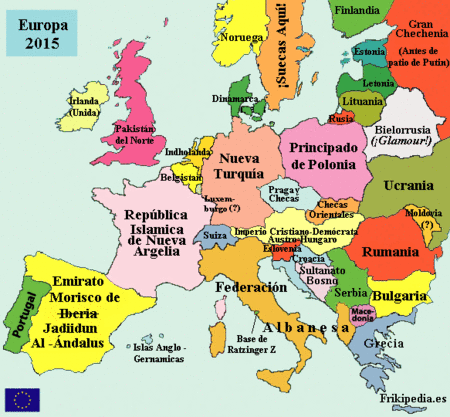

Unión Europea
 De: La Frikipedia, la enciclopedia extremadamente seria.
De: La Frikipedia, la enciclopedia extremadamente seria.
 La Unión en unos años: Más vale ir aprendiendo árabe.
Unión (supuesta) supranacional de naciones (de las de verdad, no de las ficticias), que hace dos años contaba con 15 países, y de entonces hasta ahora asiste a un 'country boom' sin precedentes, con la incorporación de 10 naciones (de las de verdad también), con la incorporación de las mafias rumanas y búlgaras y con la amenaza cercana del Imperio Otomano. La capital es Bruselas, pero se piensa en trasladarla a cualquier lugar de Suiza, ya se sabe que son más europeístas que nadie. La moneda oficial, el euro (a pesar de algunos herejes que pasan de usarla), y el idioma... aquí me han pillado. No
sé, aquí cada español habla con un español, un finés con otro finés... en fin, todo normal.
En principio es una Unión Europea, ya veremos cuánto tardan en poner sus miras en
el resto del mundo.
Alianza de Civilizaciones
Artículo principal: Alianza de Civilizaciones
Se desconoce en qué estaría pensando tolerancia y paz sin precedentes (más que nada porque un maltés no entendería a un letón, ni un portugués a un holandés, y no pueden lanzarse pullitas entre todos, que es lo que desean todos los europeos). Hay un clima de especial enemistad entre fachas y rojos.
Países y adhesiones
- Alemania: potencia de primer orden gracias a sus bancos, las aspirinas y a los Mercedes. Destacamos la Muralla China... ejem, de Berlín, total, están las dos igual...
- Italia: ingresó al mismo tiempo que Alemania. Entró para frenar sus ansias de recuperar el Imperio Romano de Occidente.
- Benelux: tres países (Bélgica, Luxemburgo (sí, el entrenador) y Neanderthal), que, como son lo mismo, pasamos de dar detalles.
- Francia: véase Inframundo. Entraron con Alemania e Italia, a ver si de una jodida vez dejan de tocarse las pelotas germanos y gabachines. Ahora incluso son amiguetes, moldeando la Unión a su gusto y manera. Son todos iguales.
- Reino Unido: entró en 1973, aunque entró casi forzada por el Imperio del Bien. Los resultados de esta forzosa adhesión se empiezan a notar: nadie aguanta a los británicos, aunque sí a los norislandeses, y los euroescépticos empiezan a exigir la retirada de la Alianza de Civilizaciones.
- Irlanda: territorio rebelde del Reino Unido, que entró también en 1973. A pesar de avanzar en gran medida en las últimas dos décadas, sus carreteras siguen siendo penosas, pero la cerveza sigue igualmente en auge que hace treinta años. Olé por ellos.
- Dinamarca: también en 1973. Entró para protegerse de las amenazas suecas que amenazaban con la invasión del país. Se especuló que Ikea estaba detrás de las intenciones invasorias.
- Chipre a su territorio, se pudo formular la propuesta de adhesión de los helenos para 1981. No les sirve para nada: siguen viviendo de los yogures e idolatrando a personajes que se inventaron hace casi 3.000 años y ya se sabe que no existen. Pero oye, viven felices. Encima han ganado la Eurocopa, Eurovisión y han tenido los Juegos Olímpicos en sólo un año, no se pueden quejar.
- Mundiales y Eurocopas para ver hacer a España la misma mierda de siempre... Todo esto lo arreglamos vendiendo casitas (sí, casitas digo) al 450% de su precio real.
También dícese del representante del tercer mundo en la Unión.
- Portugal: si entraba España, debía entrar Portugal, en condición de Estado Libre Asociado.
- Austria: los rumores de la posible estancia en vida de Hitler en algún lugar de Baviera forzó a Austria a pedir la adhesión a la Unión, ante el temor de que Adolfito resurgiera y ocupara el trono alemán para volver a comérselos en dos días y medio.
- Suecia: tras la anexión de Dinamarca a la Unión, Suecia vio frenadas sus aspiraciones, por lo que entró para beneficiarse de la venta de sus muebles en Europa, además de publicitar a sus mujeres.
- Finlandia: también amenazada desde el frente sueco, se adherió en 1995 igualmente. Sólo queda la amenaza rusa, que, como están en la mierda, no les causan el mínimo terror, así que están tranquilos.
- Isidoro.
Ahora vienen los cachos de terreno que se unieron a 2004:
- Malta: les ganamos 12-1, no sabemos nada más... excepto que es más pequeño que el Islote del Perejil
- Chipre: nos ganaron 3-2 y nos echaron a Javier Clemente. Gracias. Aunque no sabemos nada más de ellos.
- República Checa: Praga, ¿algo más? Sí: checas. Muy recomendables.
- Eslovaquia: República Checa Oriental. No van ni al Mundial, se creían que iban a echar a España, ¡ja!... allí se hacen todos los coches y van todas las empresas que abandonan a la Europa rica.
- Polonia: no se necesitó firmar nigún tratado. El Papa, el representante de Dios en la Tierra, consultó al ser supremo acerca de la incorporación polaca. Dios no contestó (como suele ser normal), y el Papa decidió por sí solo: Polonia, a la Unión. Y con ella, Cataluña.
- Estonia, Letonia y Lituania: ¿Dónde están ésas? Me parece que son hermanas...
- Eslovenia: otra que tal baila.
- Hungría: la anexión de Austria impidió la unificación del Imperio que estos dos países formaron antaño. Ahora es una cosa insignificante. Eso sí, que me traigan algún balneario de allí.
Los que vendrán en 2007:
- Rumanía: por no darse de hostias con sus vecinos búlgaros, prefirieron entrar juntitos en la Unión. Por otra parte, si ya se llenaba España de rumanos, más llegarán con su entrada.
- Bulgaria: por no darse de hostias con sus vecinos rumanos, prefirieron entrar juntitos en la Unión. Por otra parte, si ya se llenaba España de búlgaros, más llegarán con su entrada.
Y la mosca cojonera:
- El Imperio Otomano, menéamela con la mano (coño, ¿por eso era una amenaza...?): lo dicho, 73 millones de turcos que ya invaden Alemania y que amenazan con repoblar otra vez los Balcanes por vía legal gracias a su posible adhesión.
Economía
El Eurojunior y cualquier evento de ámbito europeo. La pasta recaudada (a saber dónde) se invierte de manera desigual: bien invertida en Escandinavia, el Reino Unido e Irlanda; mal invertida en España, y hurtada por las autoridades en Portugal y Grecia. A pesar de todo, el 60% de las ayudas van para los gallitos franco-germanos, que de alguna manera tienen que sanar su déficit.
Población
- El 39% son europeos.
- El 32% son inmigrantes (los con-papeles y los sin-papeles).
- Al 20% se la repamfinfla la Unión.
- Y el 9% restante quiere salirse de ella (británicos).
Hasta hace unos pocos años, todos eran ideológicamente moderados, pero asistimos en estos años a un subidón sin predecentes de la extrema derecha, por lo cual podemos deducir que la mitad de la población de la Unión es facha, el 16% está a punto de serlo y los restantes son hippies en pie de guerra contra los fachas. Hay un país muy ilustrativo en ese caso...
Autor(es):
- Krusher
- Nexo
- Kenedhor
- Jowsh
- Doctor grijander
- Endevé
- Varelax
- Roms
- BuLhaNuL
- Conan
Frikipedia 2005-2016, Licencia
GFDL 1.2 - Extraído por FrikiLeaks